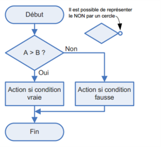
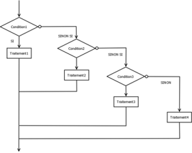
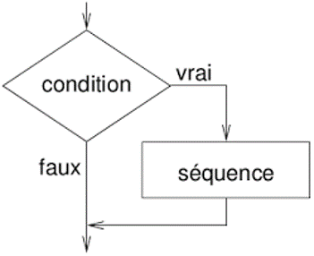
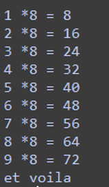

Boucles et structues conditionnelles⚓︎
Structures conditionnelles if... else⚓︎
On n'exécute certaines instructions que si une condition est remplie. Et d'autres instructions si ele ne l'est pas.

1 2 3 4 5 | |
Remarque
Le bloc else n'est pas obligatoire, s'il n'est pas là et que la condition n'est pas remplie, il ne se passe rien.
Structures imbriquées if...elif...else...⚓︎
On utilise cette structure si on a plusieurs conditions à tester. Ici le choix n'est pas binaire.

1 2 3 4 5 6 | |
En python :
1 2 3 4 5 6 | |
Multiples conditions⚓︎
On peut avoir des cas ou deux conditions doivet être remplies ou que l'une ou l'autre le soit. On utilise alors les mots clés and et or.
1 2 3 4 5 | |
Boucle Tant que ... : While⚓︎
On va tester une condition, puis exécuter une série d'instruction tant que cette condition est vraie.

1 2 3 | |
1 2 3 4 5 | |

Boucles infinies
Dans le programme précédet si j'oublie d'augmenter la variable compteur elle vaudra toujours 1 et ne sera donc jamais égale à 10. la boucle va alors se répéter indéfiniment.
1 2 3 4 5 | |
Boucle pour un certain nombre d'éléments : For⚓︎
Pour éxécuter une série d'instructions un nombre de fois déterminé à l'avance, on utilise le mot clé for qui signifie POUR.
Par exemple on veut répéter 10 fois une certaine instruction :
répéter 10 fois
1 2 | |
1 2 | |
A chaque boucle i change de valeur à partir de 0 jusque 9. à la premiere boucle i prend la valeur0, à la deuxieme 1, à la troisième 2, ... à la dixième 9.
Remarque
for i in range(8) : i prendra succéssivement les valeurs de 0 à 7 (par defaut si on ne précise pas la première valeur ça sera 0).
for i in range(1,8) : i prendra succéssivement les valeurs de 1 à 7.
for i in range(1,10,2) : i prendra succéssivement les valeurs de 1 à 9 avec un pas de 2 (1,3,5,7,9).
On peut ainsi récupérer la valeur de i à chaque boucle et s'en servir pour faire un calcul ou un affichage. Tester ce code.
1 2 | |
Pour les éléments d'une liste ou d'une chaine de caractères
1 2 3 4 5 6 7 8 9 | |
1 2 3 4 5 6 7 8 9 10 11 12 | |